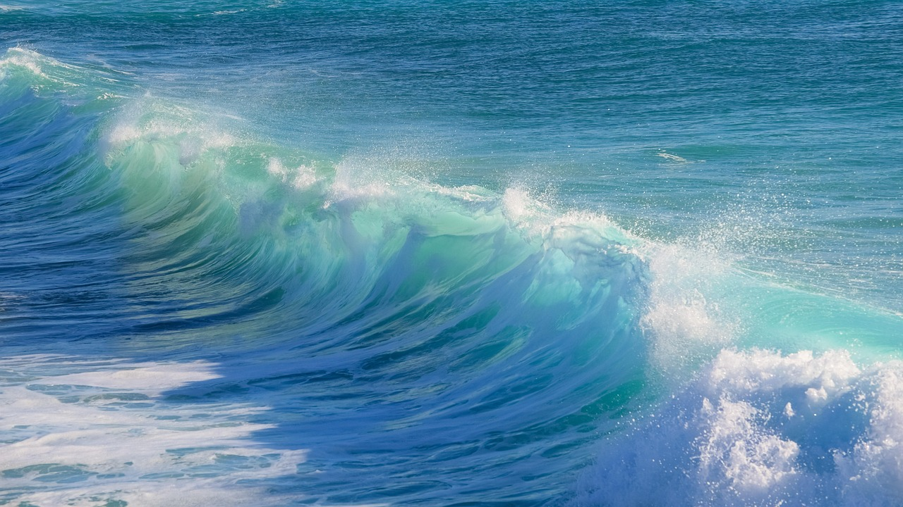
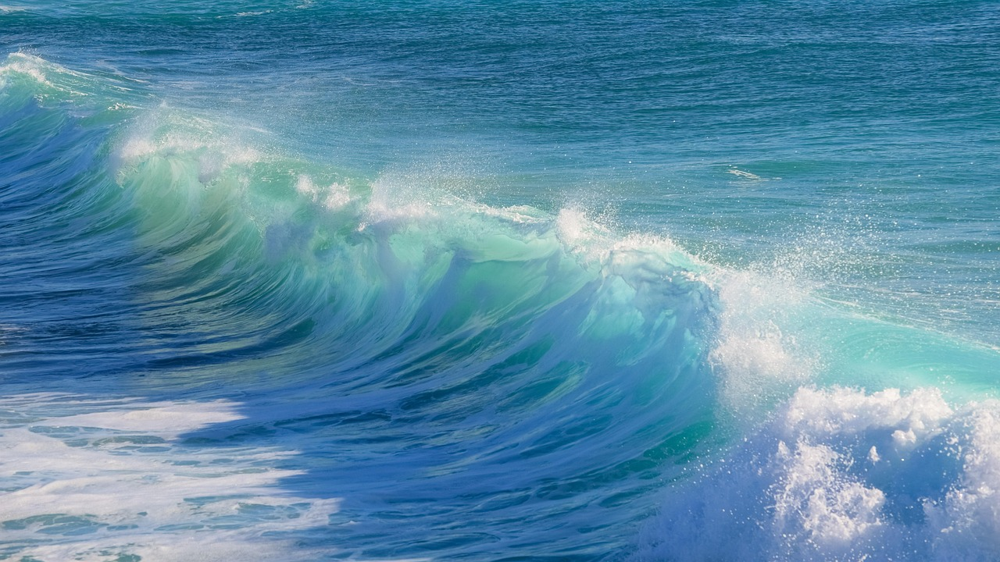

Bevezetés
Képzeld el, hogy egyetlen vízcsepp is hatalmas erőt hordoz magában. Most pedig gondolj bele, milyen elképesztő lehetőség rejlik a folyók, tavak és tengerek mozgásában! A vízenergia az egyik legrégebbi és legmegbízhatóbb megújuló energiaforrás, amelyet az emberiség évezredek óta használ.
Hogyan működik a vízenergia?
A vízenergia alapelve egyszerű: a víz mozgási energiáját mechanikai vagy elektromos energiává alakítjuk. A leggyakoribb módszer a vízerőművek alkalmazása, ahol a víz egy gáton áthaladva meghajtja a turbinákat, amelyek generátorokat működtetnek és elektromos áramot termelnek.
Típusai és felhasználása
Vízerőművek
A vízerőművek duzzasztógátas vagy átfolyó rendszerű kialakításúak lehetnek. A duzzasztógátas rendszerek nagy víztározókat használnak, amelyek szabályozott módon engedik át a vizet a turbinákon, így stabil energiát termelnek. Az átfolyó erőművek a folyó természetes áramlását hasznosítják, kisebb környezeti hatással.Árapály- és hullámenergia

Árapály- és hullámenergia
Az árapály- és hullámenergia az óceánok mozgását hasznosítja, különösen a tenger szintjének napi változásait és a hullámok erejét. Ezt speciális szerkezetekkel és part menti erőművekkel alakítják át villamos energiává. Jó példa erre a Franciaországban működő Rance-árapályerőmű, amely már hosszú ideje megbízhatóan üzemel.

 

Folyami vízerőművek
A kisebb folyókra épített vízerőművek helyi energiatermelésre szolgálnak, és gyakran kisebb közösségeket látnak el árammal. Ezek a rendszerek általában kevesebb helyet foglalnak és kevésbé befolyásolják a természetes környezetet. Környezetbarát megoldásnak számítanak, különösen ott, ahol nincs lehetőség nagyobb erőművek létesítésére.